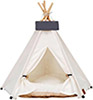
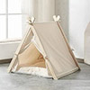

The Use Of Crates and Cages
Please Do Not Use Crate Training With You Rescue Dog
One of the commonly asked questions we get is regarding the use of crates.
We as a rescue DO NOT permit the use of crates.
Many of the rescue dogs have a history of either confinement or the worse kind of 'freedom' in the form of abandonment, therefore crates can disturb them greatly. Our guidance is to wait to assess your dog's needs as time unfolds and not blindly ahead of arrival.
Decide on where your dog will sleep and if that is a room with a door it is perfectly acceptable to close the door during the night.
Have plenty of water down 24/7 and lay some newspaper down near the door if you wish. They will drink a lot as they are not used to indoor heating and need to acclimatise.
If they chew while they're settling in and this is unmanageable for you then you could introduce a large material pen, like the one pictured, just for a few days until they adjust (when they are alone throughout the night). During the day you will be there to comfort them on arrival although the pen can be accessible at all times of course.

Material safe zones are a great option though not essential as they'll find their own places within your home -'Almond', our Belgium adoption, loved hers as you can tell.
Other options include the tent or teepee type shelters pictured and are all easily available from Amazon and other online retailers if you can not source locally.
 
As a rescue we find that crates are open to accidental misuse and we come to rely on them as owners.
There is always a reason why a dog acts a certain way. Time and understanding resolves this, as does our leadership as a responsible leader. Crates as a form of control are not a substitute for our role as an owner.
We ask you not to put the rescue in a crate and close it as this is likely to cause emotional trauma. The sound of metal can remind them of abuse in an agricultural environment where metal is used as a form of cruelty. They are widely used when they are transported to the pound from a place of neglect and rejection for no reason other than a hatred of dogs and additionally when they are put out on the rubbish tips from the same shelter (if they are pound dogs).
Two of our dogs were injured when crates were introduced by owners with doors open and closed. It included a bloodied mouth, emotional distress and a trapped paw.
If the dog world used the word 'cage' (for that is what they are) not 'crate' the use of them would suddenly seem less acceptable.
A safe zone can be created with a wooden pen, yet no one wants one of them in the living room so the assertion that it is for their comfort falls down as they would much prefer a pen. Cages are for the comfort of humans not dogs. Whilst there are exceptions, they should never replace good old fashioned common sense.
For further advice please contact the rescue.
Any cage use must be with the knowledge and permission of the welfare. We offer free advice from owner/dog behaviourists, and this should always be a first port of call.
We DO NOT permit the use of tethering either, as a person must always be at the end of any training lead or tether at all times. The dog knows the difference. They have more than likely been chained up as a form of abuse and they know the difference between being tied up to objects or being in the company of people.
You have signed a contract to this effect.